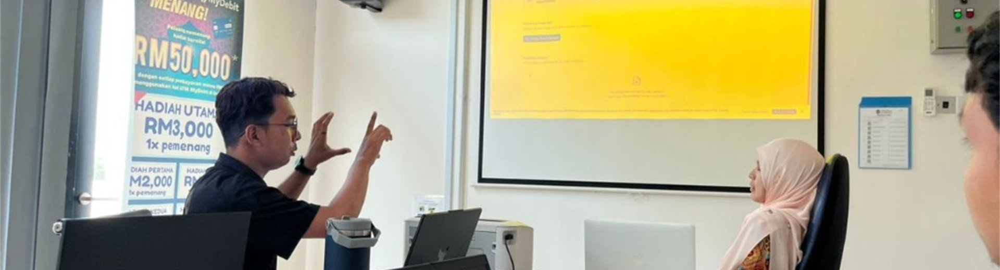

Real posts from my LinkedIn, same content and photos, presented like a professional social feed.
Professional Feed
Every post below is synced from my real LinkedIn profile, original text, images, and links to engage on LinkedIn.
SMSKPP · UniSZA FIK
PNGK 3.81 · Dean's List · Internship 20 Sep 2026 – 19 Mar 2027 · 1,164 followers on LinkedIn